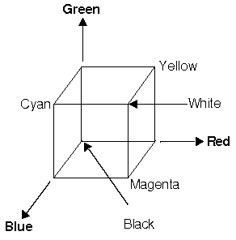
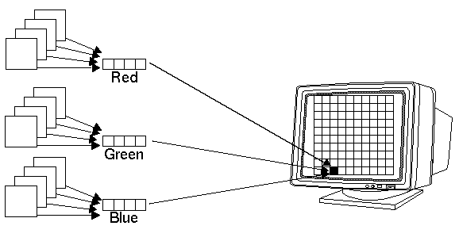
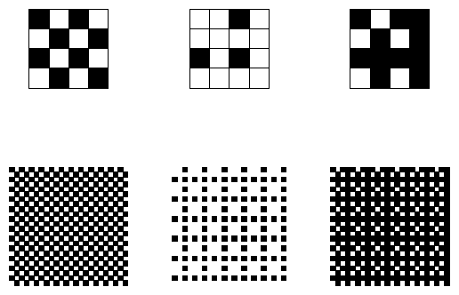
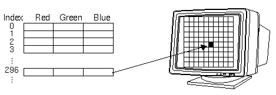
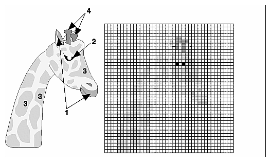

After reading this chapter, you'll be able to do the following:
Specify desired colors for drawing objects
Use smooth shading to draw a single polygon with more than one color
"Computer Color" describes the relationship between pixels on a computer
monitor and their colors; it also defines the two display modes, RGBA and
color index.
"RGBA versus Color-Index Mode" explains how the two display modes use
graphics hardware and how to decide which mode to use.
"Specifying a Color and a Shading Model" describes the OpenGL commands you use to specify the desired color or shading model.
What your eye actually sees is a mixture of photons of different frequencies. Real light sources are characterized by the distribution of photon frequencies they emit. Ideal white light consists of an equal amount of light of all frequencies. Laser light is usually very pure, and all photons have almost identical frequencies (and direction and phase, as well). Light from a sodium-vapor lamp has more light in the yellow frequency. Light from most stars in space has a distribution that depends heavily on their temperatures (black-body radiation). The frequency distribution of light from most sources in your immediate environment is more complicated.
The human eye perceives color when certain cells in the retina (called cone cells, or just cones) become excited after being struck by photons. The three different kinds of cone cells respond best to three different wavelengths of light: one type of cone cell responds best to red light, one type to green, and the other to blue. (A person who is color-blind is usually missing one or more types of cone cells.) When a given mixture of photons enters the eye, the cone cells in the retina register different degrees of excitation depending on their types, and if a different mixture of photons comes in that happens to excite the three types of cone cells to the same degrees, its color is indistinguishable from that of the first mixture.
Since each color is recorded by the eye as the levels of excitation of the cone cells by the incoming photons, the eye can perceive colors that aren't in the spectrum produced by a prism or rainbow. For example, if you send a mixture of red and blue photons so that both the red and blue cones in the retina are excited, your eye sees it as magenta, which isn't in the spectrum. Other combinations give browns, turquoises, and mauves, none of which appear in the color spectrum.
A computer-graphics monitor emulates visible colors by lighting pixels with a combination of red, green, and blue light in proportions that excite the red-, green-, and blue-sensitive cones in the retina in such a way that it matches the excitation levels generated by the photon mix it's trying to emulate. If humans had more types of cone cells, some that were yellow-sensitive for example, color monitors would probably have a yellow gun as well, and we'd use RGBY (red, green, blue, yellow) quadruples to specify colors. And if everyone were color-blind in the same way, this chapter would be simpler.
To display a particular color, the monitor sends the right amounts of red, green, and blue light to appropriately stimulate the different types of cone cells in your eye. A color monitor can send different proportions of red, green, and blue to each of the pixels, and the eye sees a million or so pinpoints of light, each with its own color.
This section considers only how the eye perceives combinations of photons
that enter it. The situation for light bouncing off of materials and entering
the eye is even more complex - white light bouncing off a red ball will
appear red, or yellow light shining through blue glass appears almost black,
for example. These effects are discussed in "Real-World and OpenGL Lighting."
In color-index mode, you might want to alter the values in the color map. Since color maps are controlled by the window system, there are no OpenGL commands to do this. All the examples in this book initialize the color-display mode at the time the window is opened by using routines from the auxiliary library, which is described in detail in Appendix E .
Different graphics hardware varies greatly in both the size of the pixel array and the number of colors that can be displayed at each pixel. On a given graphics system, every pixel has the same amount of memory for storing its color, and all the memory for all the pixels is called the color buffer. The size of a buffer is usually measured in bits, so an 8-bit buffer could store 8 bits of data (256 possible different colors) for each pixel. The size of the possible buffers varies from machine to machine. (See Chapter 10 for more information.)
The R, G, and B values can range from 0.0 (none) to 1.0 (full intensity). For example, R = 0.0, G = 0.0, and B = 1.0 represents the brightest possible blue. If R, G, and B are all 0.0, the pixel is black; if all are 1.0, the pixel is drawn in the brightest white that can be displayed on the screen. Blending green and blue creates shades of cyan. Blue and red combine for magenta. Red and green create yellow. To help you create the colors you want from the R, G, and B components, look at the color cube shown in Figure J-12 . The axes of this cube represent intensities of red, blue, and green. A black-and-white version of the cube is shown in Figure 5-1 .

Figure 5-1 : The Color Cube in Black and White
The commands to specify a color for an object (in this case, a point) can be as simple as this:
glColor3f (1.0, 0.0, 0.0); /* the current RGB color is red: */ /* full red, no green, no blue. */ glBegin (GL_POINTS); glVertex3fv (point_array); glEnd ();In certain modes (for example, if lighting or texturing calculations are performed), the assigned color might go through other operations before arriving in the framebuffer as a value representing a color for a pixel. In fact, the color of a pixel is determined by a lengthy sequence of operations.
Early in a program's execution, the color-display mode is set to either RGBA mode or color-index mode. Once the color-display mode is initialized, it can't be changed. As the program executes, a color (either a color index or an RGBA value) is determined on a per-vertex basis for each geometric primitive. Either a color you've explicitly specified for a vertex is used or, if lighting is enabled, the transformation matrices interact with the surface normals and other material properties to determine the vertex's color. In other words, a red ball with a blue light shining on it looks different from the same ball with no light on it. (See Chapter 6 for details.) After the relevant lighting calculations are performed, the chosen shading model is applied. As explained in "Specifying a Color and a Shading Model," you can choose flat or smooth shading, each of which has different effects on the eventual color of a pixel.
Next, the primitives are rasterized, or converted to a two-dimensional
image. Rasterizing involves determining which squares of an integer grid
in window coordinates are occupied by the primitive and then assigning
color and other values to each such square. A grid square along with its
associated values of color, z (depth), and texture coordinates is
called a fragment. Pixels are elements of the framebuffer; a fragment comes
from a primitive and is combined with its corresponding pixel to yield
a new pixel. Once a fragment is constructed, texturing, fog, and antialiasing
are applied - if they're enabled - to the fragments. After that, any specified
alpha blending, dithering, and bitwise logical operations are carried out
using the fragment and the pixel already stored in the framebuffer. Finally,
the fragment's color value (either color index or RGBA) is written into
the pixel and displayed in the window using the window's color-display
mode.
Bitplanes are often divided evenly into storage for R, G, and B components (that is, a 24-bitplane system devotes 8 bits each to red, green, and blue), but this isn't always true. To find out the number of bitplanes available on your system for red, green, blue, alpha, or color-index values, use glGetIntegerv() with GL_RED_BITS, GL_GREEN_BITS, GL_BLUE_BITS, GL_ALPHA_BITS, and GL_INDEX_BITS.
Color intensities on most computer screens aren't perceived as linear by the human eye. Consider colors consisting of just a red component, with green and blue set to zero. As the intensity varies from 0.0 (off) to 1.0 (full on), the number of electrons striking the pixels increases, but the question is, does 0.5 look like halfway between 0.0 and 1.0? To test this, write a program that draws alternate pixels in a checkerboard pattern to intensities 0.0 and 1.0, and compare it with a region drawn solidly in color 0.5. OpenGL assumes they're the same. If they're not, you need to use whatever correction mechanism is provided on your particular system. For example, many systems have a table to adjust intensities so that 0.5 appears to be halfway between 0.0 and 1.0. The mapping usually used is an exponential one, with the exponent referred to as gamma (hence the term gamma correction). Using the same gamma for the red, green, and blue components gives pretty good results, but three different gamma values might give slightly better results. For more details on this topic, see Foley, van Dam, et al.

Figure 5-2 : RGB Values from the Bitplanes
The alpha value (the A in RGBA) has no direct effect on the color displayed on the screen. It can be used for many things, including blending and transparency, and it can have an effect on the values of R, G, and B that are written. See "Blending" for more information about alpha values.
The number of distinct colors that can be displayed at a single pixel depends on the number of bitplanes and the capacity of the hardware to interpret those bitplanes. The number of distinct colors can't exceed 2n, where n is the number of bitplanes. Thus, a machine with 24 bitplanes for RGB can display up to 16.77 million distinct colors.
Some graphics hardware uses dithering to increase the number of displayable colors at the expense of spatial resolution. Dithering is the technique of using combinations of some colors to create the effect of other colors. To illustrate how dithering works, suppose your system has only one bit each for R, G, and B, so it can display only eight colors: black, white, red, blue, green, yellow, cyan, and magenta. To display a pink region, the hardware can fill the region in a checkerboard manner, alternating red and white pixels. If your eye is far enough back from the screen that it can't distinguish individual pixels, the region appears pink - the average of red and white. Redder pinks can be achieved by filling a higher proportion of the pixels with red, whiter pinks would use more white pixels, and so on.
With this technique, there are no pink pixels. The only way to achieve the effect of "pinkness" is to cover a region consisting of multiple pixels - you can't dither a single pixel. If you specify an RGB value for an unavailable color and fill a polygon, the hardware fills the pixels in the interior of the polygon with a mixture of nearby colors whose average appears to your eye to be the color you want. (Remember, though, that if you're reading pixel information out of the framebuffer, you get the actual red and white pixel values, since there aren't any pink ones. See Chapter 8 for more information about reading pixel values.)
Figure 5-3 illustrates some simple dithering of black and white pixels to make shades of gray. From left to right, the 4 × 4 patterns at the top represent dithering patterns for 50 percent, 19 percent, and 69 percent gray. Under each pattern, you can see repeated reduced copies of each pattern, but these black and white squares are still bigger than most pixels. If you look at them from across the room, you can see that they blur together and appear as three levels of gray.

Figure 5-3 : Dithering Black and White to Create Gray
With about 8 bits each of R, G, and B, you can get a fairly high-quality image without dithering. Just because your machine has twenty-four color bitplanes, however, doesn't mean that dithering won't occur. For example, if you are running in double-buffer mode, the bitplanes might be divided into two sets of twelve, so there are really only 4 bits each per R, G, and B component. Without dithering, 4-bit-per-component color can give less than satisfactory results in many situations.
You enable or disable dithering by passing GL_DITHER to glEnable() or glDisable().

Figure 5-4 : A Color Map
A painter filling in a paint-by-number scene chooses a color from the color palette and fills the corresponding numbered regions with that color. A computer stores the color index in the bitplanes for each pixel. Then those bitplane values reference the color map, and the screen is painted with the corresponding red, green, and blue values from the color map, as shown in Figure 5-5 .

Figure 5-5 : Using a Color Map to Paint a Picture
In color-index mode, the number of simultaneously available colors is limited by the size of the color map and the number of bitplanes available. The size of the color map is determined by the amount of hardware dedicated to it. Typical sizes range from 256 (28) to 4096 (212). The size of the color map is a power of 2, indexed by the number of bitplanes available in color-index mode. If there are 2n indices in the color map and m available bitplanes, the number of usable entries is the smaller of 2n and 2m.
With RGBA mode, each pixel's color is independent of other pixels. However, in color-index mode, each pixel with the same index stored in its bitplanes shares the same color-map location. If the contents of an entry in the color map change, then all pixels of that color index change their color.
You might prefer to use color-index mode in the following cases:
If you have only a small number n of bitplanes available and
if you need fewer than 2n different colors, you should consider color-index
mode.
If you have a limited number of bitplanes available, RGBA mode might
produce noticeably coarse shading. Color-index mode might work better if
you have limited shading requirements (only shades of gray, for example).
Color-index mode can be useful for various tricks, such as color-map animation and drawing in layers. See Chapter 13 for more information.
set_color(RED); draw_item(A); draw_item(B); set_color(GREEN); set_color(BLUE); draw_item(C);Items A and B are drawn in red, and item C is drawn in blue. The fourth line, which sets the current color to green, has no effect (except to waste a bit of time). With no lighting or texturing, when the current color is set, all items drawn afterward are drawn in that color until the current color is changed to something else.
Sets the current red, green, blue, and alpha values. This command can have up to three suffixes, which differentiate variations of the parameters accepted. The first suffix is either 3 or 4, to indicate whether you supply an alpha value in addition to the red, green, and blue values. If you don't supply an alpha value, it's automatically set to 1.0. The second suffix indicates the data type for parameters: byte, short, integer, float, double, unsigned byte, unsigned short, or unsigned integer. The third suffix is an optional v, which indicates that the argument is a pointer to an array of values of the given data type.
For the versions of glColor*() that accept floating-point data types, the values should typically range between 0.0 and 1.0, the minimum and maximum values that can be stored in the framebuffer. (Values ouside the range [0,1] are clamped to the range [0,1] when used directly, but aren't clamped when used to modify lighting material parameters.) Unsigned-integer color components, when specified, are linearly mapped to floating-point values such that the largest representable value maps to 1.0 (full intensity), and zero maps to 0.0 (zero intensity). Signed-integer color components, when specified, are linearly mapped to floating-point values such that the most positive representable value maps to 1.0, and the most negative representable value maps to -1.0 (see Table 5-1 ). Floating-point values are mapped directly. Neither floating-point nor signed-integer values are clamped to the range [0,1] before updating the current color. However, color components are clamped to this range before they are interpolated or written into a color buffer.
| Suffix | Data Type | Minimum Value | Min Value Maps to | Maximum Value | Max Value Maps to |
|---|---|---|---|---|---|
| b | 1-byte integer | -128 | -1.0 | 127 | 1.0 |
| s | 2-byte integer | -32,768 | -1.0 | 32,767 | 1.0 |
| i | 4-byte integer | -2,147,483,648 | -1.0 | 2,147,483,647 | 1.0 |
| ub | unsigned 1-byte integer | 0 | 0.0 | 255 | 1.0 |
| us | unsigned 2-byte integer | 0 | 0.0 | 65,535 | 1.0 |
| ui | unsigned 4-byte integer | 0 | 0.0 | 4,294,967,295 | 1.0 |
Sets the current color index. The first suffix for this command indicates the data type for parameters: short, integer, float, or double. The second, optional suffix is v, which indicates that the argument is an array of values of the given data type (the array contains only one value).
Advanced
The current index is stored as a floating-point value. Integer values are converted directly to floating-point values, with no special mapping. Index values outside the representable range of the color-index buffer aren't clamped. However, before an index is dithered (if enabled) and written to the framebuffer, it's converted to fixed-point format. Any bits in the integer portion of the resulting fixed-point value that don't correspond to bits in the framebuffer are masked out.
Sets the shading model. The mode parameter can be either GL_SMOOTH (the default) or GL_FLAT.
With flat shading, the color of one vertex of a primitive is duplicated across all the primitive's vertices. With smooth shading, the color at each vertex is treated individually. For a line primitive, the colors along the line segment are interpolated between the vertex colors. For a polygon primitive, the colors for the interior of the polygon are interpolated between the vertex colors. Example 5-1 draws a smooth-shaded triangle, as shown in Figure J-11 .
Example 5-1 : Drawing a Smooth-Shaded Triangle: smooth.c
#include <GL/gl.h>
#include <GL/glu.h>
#include "aux.h"
void myinit (void)
{
glShadeModel (GL_SMOOTH); /* GL_SMOOTH is the default */
}
void triangle(void)
{
glBegin (GL_TRIANGLES);
glColor3f (1.0, 0.0, 0.0);
glVertex2f (5.0, 5.0);
glColor3f (0.0, 1.0, 0.0);
glVertex2f (25.0, 5.0);
glColor3f (0.0, 0.0, 1.0);
glVertex2f (5.0, 25.0);
glEnd ();
}
void display(void)
{
glClear (GL_COLOR_BUFFER_BIT);
triangle ();
glFlush ();
}
void myReshape(GLsizei w, GLsizei h)
{
glViewport(0, 0, w, h);
glMatrixMode(GL_PROJECTION);
glLoadIdentity();
if (w <= h)
gluOrtho2D (0.0, 30.0, 0.0,
30.0 * (GLfloat) h/(GLfloat) w);
else
gluOrtho2D (0.0, 30.0 * (GLfloat) w/(GLfloat) h, 0.0,
30.0);
glMatrixMode(GL_MODELVIEW);
}
int main(int argc, char** argv)
{
auxInitDisplayMode (AUX_SINGLE | AUX_RGBA);
auxInitPosition (0, 0, 500, 500);
auxInitWindow (argv[0]);
myinit();
auxReshapeFunc (myReshape);
auxMainLoop(display);
}
With smooth shading, neighboring pixels have slightly different color values.
In RGBA mode, adjacent pixels with slightly different values look similar,
so the color changes across a polygon appear gradual. In color-index mode,
adjacent pixels may reference different locations in the color-index table,
which may not have similar colors at all. Adjacent color-index entries
may contain wildly different colors, so a smooth-shaded polygon in color-index
mode can look psychedelic.
To avoid this problem, you have to create a color ramp of smoothly changing colors among a contiguous set of indices in the color map. Remember that loading colors into a color map is performed through your window system rather than OpenGL. For the moment, however, assume you have an auxSetOneColor() routine that loads a single index in the color map with specified red, green, and blue values. The first argument for this routine is the index, and the others are the red, green, and blue values. To load thirty-two contiguous color indices (from color index 16 to 47) with slightly differing shades of yellow, you might call
for(i=0; i<32; i++){
auxSetOneColor(16+i, 1.0*(i/32.0), 1.0*(i/32.0), 0.0);
}
Now, if you render smooth-shaded polygons that use only the colors from
index 16 to 47, those polygons have gradually differing shades of yellow.
With flat shading, the color of a single vertex defines the color of an entire primitive. For a line segment, the color of the line is the current color when the second (ending) vertex is specified. For a polygon, the color used is the one that's in effect when a particular vertex is specified, as shown in Table 5-2 . The table counts vertices and polygons starting from 1. OpenGL follows these rules consistently, but the best way to avoid uncertainty about how a flat-shaded primitive will be drawn is to specify only one color for the primitive.
| Type of Polygon | Vertex Used to Select the Color for the ith Polygon |
|---|---|
| single polygon | 1 |
| triangle strip | i+2 |
| triangle fan | i+2 |
| independent triangle | 3i |
| quad strip | 2i+2 |
| independent quad | 4i |